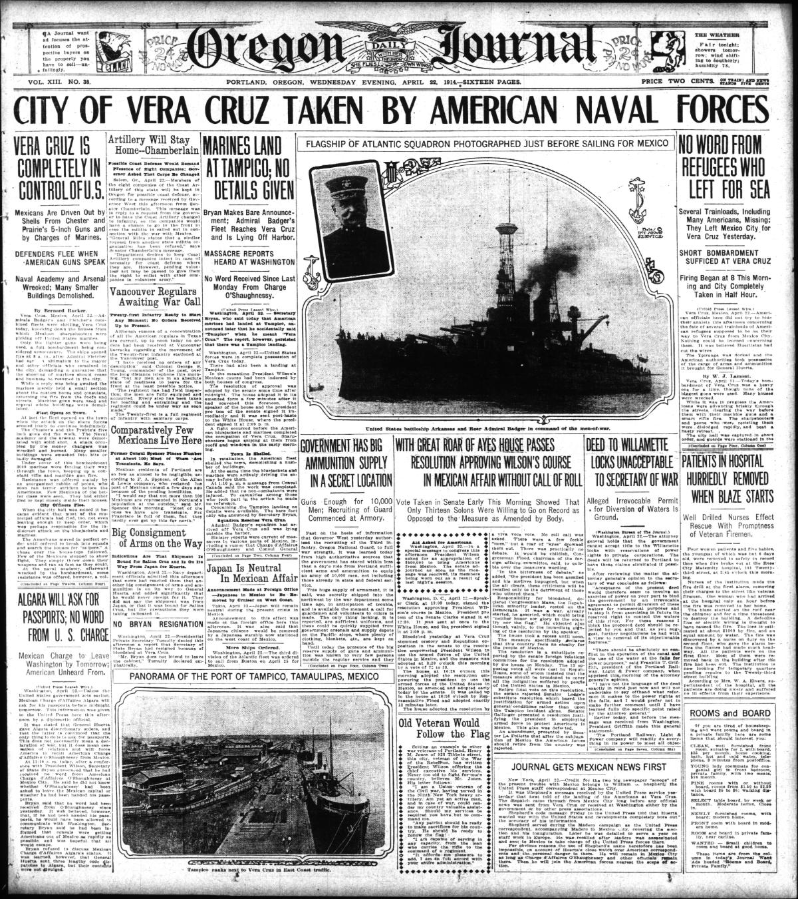
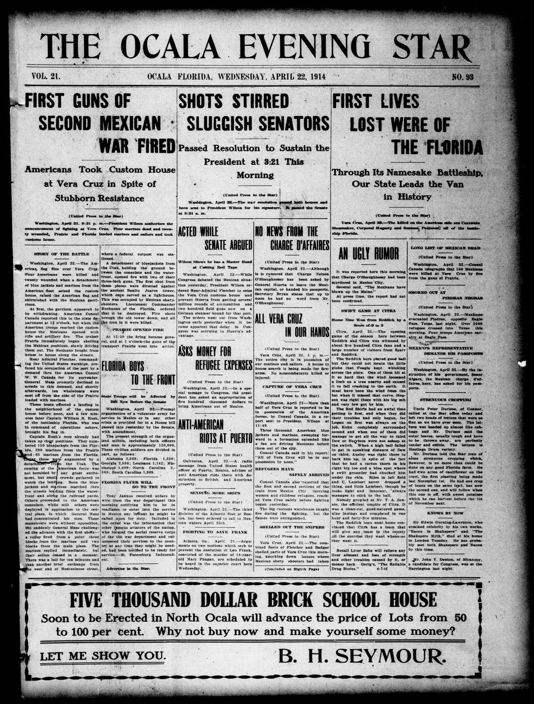
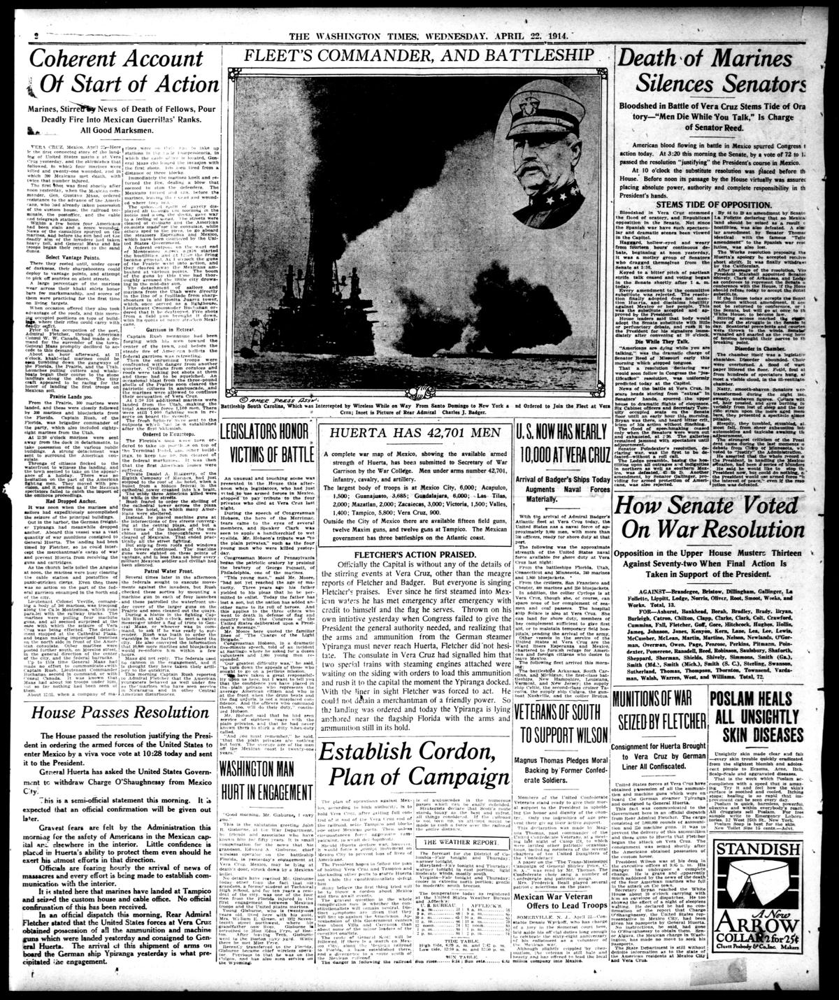

HN-389: U.S. sailors and Marines occupy Veracruz amid conflicting war reports
HN HN-389 · April 22, 1914 · War, Conflict & Security > Wars, Battles & Campaigns > Land battles
Recorded finding
Discovery narrative
Source: Richmond Palladium (Daily), p. 1 — original page; U.S. Navy historical reconstruction.
Report: The newspaper reported the landing of U.S. sailors and Marines at Veracruz, Mexico, fighting near the waterfront and customs house, reinforcements from American warships, and increasingly grim speculation about U.S.–Mexican war. Some reports treated a much wider conflict as inevitable.
Assessment: The Navy confirms landings and the seizure of the customs house on April 21–22, amid fighting with Mexican defenders. An imminent general war was a prediction, not a settled fact. The specific reported number of killed or captured combatants should be reconciled with military records.
Original page scans (4)
Authentic scans retrieved from Library of Congress / Chronicling America and Historic Oregon Newspapers (University of Oregon). Article crops are located using the archive's own OCR word coordinates and rendered at native crop resolution; page scans are reduced-size access renditions. No images were generated, mocked, or retouched.

Library of Congress / Chronicling America
Open larger view · Archive viewer (full resolution)

Historic Oregon Newspapers (University of Oregon)
Open larger view · Archive viewer (full resolution)

Library of Congress / Chronicling America
Open larger view · Archive viewer (full resolution)

Library of Congress / Chronicling America
Open larger view · Archive viewer (full resolution)
Source acquisition
Not yet acquired. Queued for provider-specific acquisition testing (see source-acquisition manifest).
Original seed
URL (preserved verbatim): https://newspapers.library.in.gov/?a=d&d=RPD19140422.1.1
Saved research report: Historical_Newspaper_Event_Research_378-402_2026-10-23.md
Evidence note: A newspaper report means a historical publication made a claim; it does not establish that claim as fact. Contemporary reporting is separated from later scholarly context and our own assessment.